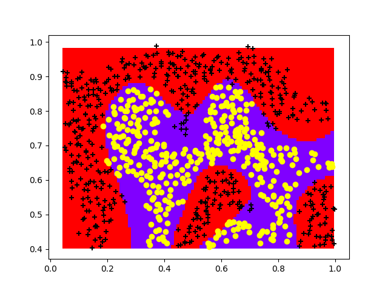

Support Vector Machines
导入如下包：1
2
3
4import matplotlib.pyplot as plt
import numpy as np
from scipy.io import loadmat
from sklearn import svm
Example Dataset 1
读取数据
1 | data1 = loadmat('ex6data1.mat') |
绘制散点图
1 | def plotTrainData(X, y): |
查看ex6data1的散点图：1
2plotTrainData(X, y)
plt.show()
结果如下：
支持向量机
为了使用支持向量机算法，我们导入了sklearn包中的svm模型。sklearn包内置了很多机器学习算法。1
2
3
4
5
6
7def SVM(X, y, C, kernel, sigma=0):
if kernel == 'linear':
clf = svm.SVC(C=C, kernel=kernel,decision_function_shape='ovr')
else:
clf = svm.SVC(C=C, kernel=kernel, gamma=sigma, decision_function_shape='ovr')
clf.fit(X, y.ravel())
return clf
关于本例数数据集，通过散点图观测发现，它是一个线性可分的。并且样本数m=51，特征n=2，因此此处我们选择不带核函数的支持向量机。1
2C = 1
clf = SVM(X, y, C, 'linear')
绘制决策边界
此处借鉴了一位博主的思路（当时确实没想明白）。该方法的思路是，将整个画布的数据点全部取出来（此处每个点的间隔为0.01，近似全部取出），通过训练出来的模型去判断每个点的分类，不同的分类用不同的颜色表示，这样就能刻画出决策边界。1
2
3
4
5
6
7
8
9
10
11
12
13
14
15
16
17
18
19def border_of_classifier(sklearn_cl, x, y):
x_min, y_min = x.min(axis = 0)
x_max, y_max = x.max(axis = 0)
# 利用一组网格数据求出方程的值，然后把边界画出来。
x_values, y_values = np.meshgrid(np.arange(x_min, x_max, 0.01),
np.arange(y_min, y_max, 0.01))
# 计算出分类器对所有数据点的分类结果 生成网格采样
mesh_output = sklearn_cl.predict(np.c_[x_values.ravel(), y_values.ravel()])
# 数组维度变形
mesh_output = mesh_output.reshape(x_values.shape)
## 会根据 mesh_output结果自动从 cmap 中选择颜色
plt.pcolormesh(x_values, y_values, mesh_output, cmap = 'rainbow')
positive_ex = np.array([x[i] for i in range(len(y)) if y[i] == 1])
negative_ex = np.array([x[i] for i in range(len(y)) if y[i] == 0])
plt.scatter(positive_ex[:,0],positive_ex[:,1],marker='+',
c = 'black')
plt.scatter(negative_ex[:,0],negative_ex[:,1],marker='o',
c = 'yellow')
注：np.meshgrid函数是参数是两个列表，第一个输出X为按行重复参数1的所有数据直至len(参数2)行。第二个输出Y为按咧重复参数2的所有数据直至len(参数1)列。这样就能得到画布中所有的网格点。plt.pcolormesh函数是将不同的分类点以不同的颜色进行标注，cmap可指定不同的颜色分类，rainbow为自动选取颜色。
结果如下所示：
C = 1

C = 100
我们发现当C=100时，左上角的点也被划分正确，但此时已经过拟合，符合我们在课程中所学到的C越大，方差越大，越容易过拟合（因为C越大，为了最小化代价函数，需要让第一项尽可能小，所以需要点的分类尽可能正确，就会过度的拟合）。
SVM with Gaussian Kernels
Gaussian Kernel
The Gaussian kernel function is defined as:
$K_{gaussian}(x^{(i)},x^{(j)})=exp(-\frac{||x^{(i)}-x^{(j)}||^2}{2\sigma^2})=exp(-\frac{\displaystyle\sum^{n}_{k=1}(x^{(i)}_k-x^{(j)}_k)^2}{2\sigma^2})$
1 | def gaussianKernel(x1, x2, sigma): |
1 | x1, x2 = np.array([1,2,1]),np.array([0,4,-1]) |
结果为：0.32465246735834974
Example Dataset 2
1 | data2 = loadmat('ex6data2.mat') |
散点图：
SVM:
1 | # C=100, sigma=10 |
训练准确率：0.9698725376593279
拟合结果：

Example Dataset 3
1 | data3 = loadmat('ex6data3.mat') |
散点图：
bestC，bestsigma：1
2
3
4
5
6
7
8
9
10
11
12def data3Params(X, y, Xval, yval):
bestC, bestsigma, highacc = 0, 0, 0
params = [0.01, 0.03, 0.1, 0.3, 1, 3, 10, 30]
for C in params:
for sigma in params:
clf = SVM(X, y, C, 'rbf', sigma)
acc = clf.score(Xval, yval)
if acc > highacc:
highacc = acc
bestC = C
bestsigma = sigma
return bestC, bestsigma
1 | bestC, bestSigma = data3Params(X3, y3, X3val, y3val) |
结果为：3 30
svm：1
2
3
4clf = SVM(X3, y3, bestC, 'rbf', bestSigma)
print(clf.score(X3val, y3val))
border_of_classifier(clf, X3, y3)
plt.show()
准确率：0.965
拟合结果：
Spam Classification
Preprocessing Emails
首先需要对一封邮件进行处理，处理方法如下：

处理后，需要对每个单词进行映射为相应的数字，对照所定义的单词表vocab.txt进行映射。1
2
3
4
5
6
7
8
9
10
11
12
13
14
15
16
17
18
19
20
21
22
23
24
25
26
27
28
29
30
31
32
33
34
35
36
37
38
39
40
41
42
43
44
45
46
47
48
49
50
51
52
53
54
55
56
57
58
59
60def processEmail(path):
email = []
vocab = []
word_indices = []
def word_stem(data):
if data[-1:] == 's' and len(data) > 1:
data = data[:-1]
if data[-2:] == 'ed':
data = data[:-2]
if data[-3:] == 'ing':
data = data[:-3]
if data[-1:] == 'e' and len(data) > 1:
data = data[:-1]
return data
with open(path) as f:
for line in f:
line_data = line.lower().strip().split(' ')
# 去空行
if len(line_data[0]) == 0:
continue
else:
for data in line_data:
if data.isalnum() != True:
# 去独立标点
if len(data) < 2:
continue
else:
# 去字符后标点
if data[len(data)-1].isalnum() != True:
data = data[:-1]
# 改末尾数字
if data.isdigit():
data = 'number'
# 改价格
if '$' in data:
data = 'dollar'
# 改email地址
if '@' in data:
data = 'emailaddr'
# 改http
if 'http' in data:
data = 'httpaddr'
data = word_stem(data)
email.append(data)
else:
# 去中间数字
if data.isdigit():
data = 'number'
data = word_stem(data)
email.append(data)
with open('vocab.txt') as f:
for line in f:
data = line.strip().split('\t')
vocab.append(data[1])
for data in email:
if data in vocab:
index = vocab.index(data) + 1
word_indices.append(index)
return word_indices
vocab.txt：1
2
3
4
5
6
7
8
9
10
11
12
13
141 aa
2 ab
3 abil
4 abl
5 about
6 abov
7 absolut
8 abus
9 ac
10 accept
11 access
...
1898 zero
1899 zip
emailSample1.txt：1
2
3
4
5
6
7
8
9> Anyone knows how much it costs to host a web portal ?
>
Well, it depends on how many visitors you're expecting.
This can be anywhere from less than 10 bucks a month to a couple of $100.
You should checkout http://www.rackspace.com/ or perhaps Amazon EC2
if youre running something big..
To unsubscribe yourself from this mailing list, send an email to:
groupname-unsubscribe@egroups.com
处理后的结果：1
[86, 916, 794, 1077, 883, 370, 1699, 790, 1822, 1831, 883, 431, 1171, 794, 592, 1676, 238, 89, 688, 1663, 1120, 1062, 1699, 375, 1162, 477, 1893, 1510, 799, 1182, 1237, 810, 1895, 1547, 1699, 1758, 1896, 688, 1676, 992, 961, 1477, 71, 530, 1699, 531]
Extracting Features from Emails
再将所得到的单词索引表映射为一个特征矩阵。1
2
3
4
5def emailFeatures(word_indices):
map_word_indices = np.zeros((1900,))
for i in word_indices:
map_word_indices[i] = 1
return map_word_indices
结果为：1
[0. 0. 0. ... 0. 0. 0.]
Training SVM for Spam Classification
1 | Train = loadmat('spamTrain.mat') |
结果为：1
20.944
0.953
Try your own emails
对emailSample1.txt,emailSample1.txt,spamSample1.txt,spamSample2.txt进行评估预测。1
2
3
4
5
6
7
8
9
10
11
12
13
14
15
16X = []
path = ['emailSample1.txt','emailSample1.txt','spamSample1.txt','spamSample2.txt']
for p in path:
w_i = processEmail(p)
m_w_i = emailFeatures(w_i)[1:]
X.append(m_w_i)
X = np.array(X)
Train = loadmat('spamTrain.mat')
XTrain = np.array(Train['X'])
yTrain = np.array(Train['y'])
clf = svm.SVC(C = 1, kernel = 'rbf', decision_function_shape='ovr')
clf.fit(XTrain, yTrain)
print(clf.predict(X))
结果为：[0 0 1 0]，最后一个分类错误？